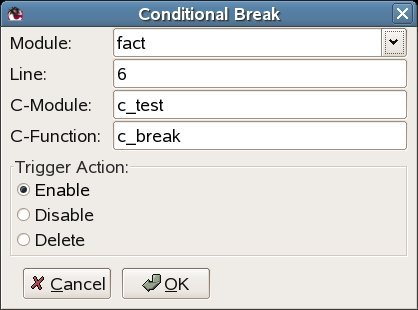
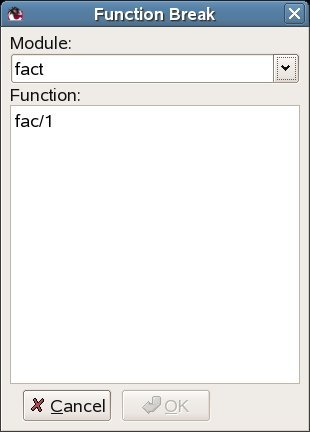
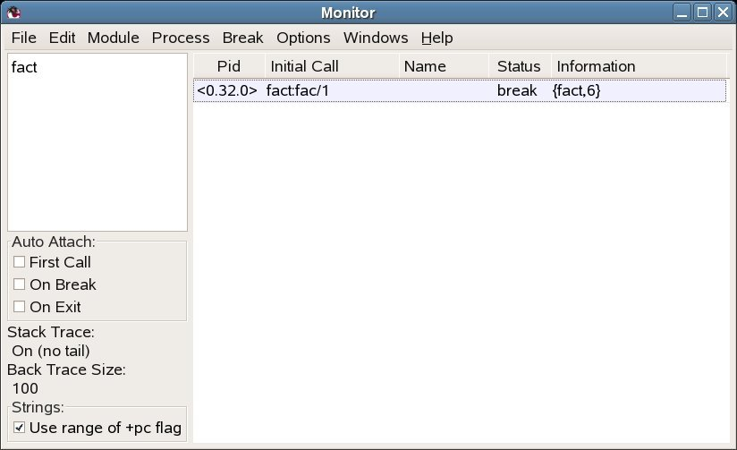
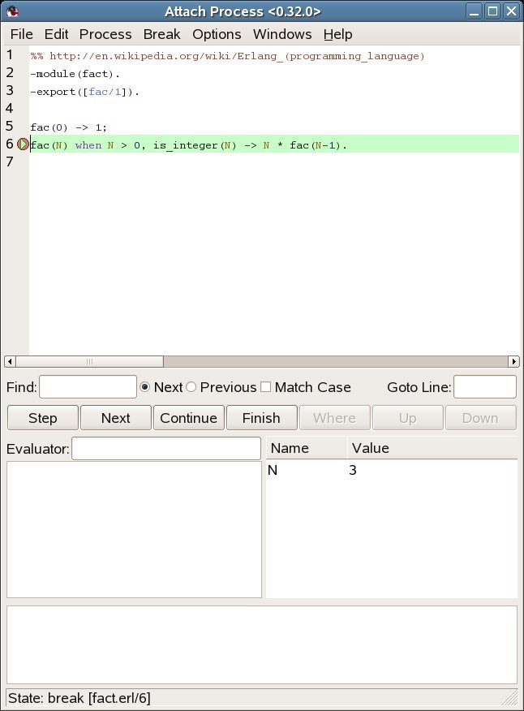
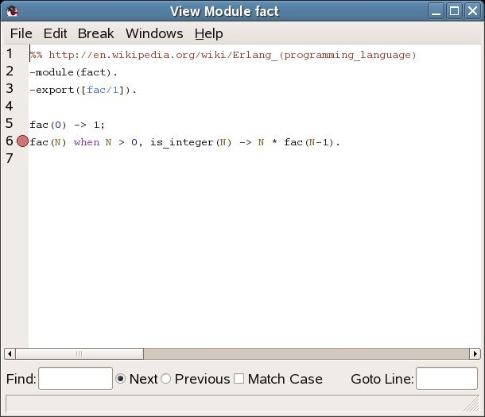

1 Debugger
1.1 Introduction
Debugger is a graphical user interface for the Erlang interpreter, which can be used for debugging and testing of Erlang programs. For example, breakpoints can be set, code can be single stepped and variable values can be displayed and changed.
The Erlang interpreter can also be accessed via the interface module int, see int(3).
Warning: Note that the Debugger at some point might start tracing on the processes which execute the interpreted code. This means that a conflict will occur if tracing by other means is started on any of these processes.
1.2 Getting Started with Debugger
Start Debugger by calling debugger:start(). It will start the Monitor window showing information about all debugged processes, interpreted modules and selected options.
Initially there are normally no debugged processes. First, it must be specified which modules should be debugged, or interpreted as it is also called. This is done by choosing Module->Interpret... in the Monitor window and then selecting the appropriate modules from the Interpret Dialog window.
Only modules compiled with the option debug_info set can be interpreted. Non-interpretable modules are shown within parenthesis in the Interpret Dialog window.
When a module is interpreted, it can be viewed in a View Module window. This is done by selecting the module from the Module->module->View menu. The contents of the source file is shown and it is possible to set breakpoints.
Now the program that should be debugged can be started. This is done the normal way from the Erlang shell. All processes executing code in interpreted modules will be displayed in the Monitor window. It is possible to attach to one of these processes, by double-clicking it, or by selecting the process and then choosing Process->Attach.
Attaching to a process will result in a Attach Process window being opened for this process. From the Attach Process window, it is possible to control the process execution, inspect variable values, set breakpoints etc.
1.3 Breakpoints and Break Dialogue Windows
Once the appropriate modules are interpreted, breakpoints can be set at relevant locations in the source code. Breakpoints are specified on a line basis. When a process reaches a breakpoint, it stops and waits for commands (step, skip, continue,...) from the user.
When a process reaches a breakpoint, only that process is stopped. Other processes are not affected.
Breakpoints are created and deleted using the Break menu of the Monitor window, View Module window and Attach Process window.
Executable Lines
To have effect, a breakpoint must be set at an executable line, which is a line of code containing an executable expression such as a matching or a function call. A blank line or a line containing a comment, function head or pattern in a case- or receive statement is not executable.
In the example below, lines number 2, 4, 6, 8 and 11 are executable lines:
1: is_loaded(Module,Compiled) ->
2: case get_file(Module,Compiled) of
3: {ok,File} ->
4: case code:which(Module) of
5: ?TAG ->
6: {loaded,File};
7: _ ->
8: unloaded
9: end;
10: false ->
11: false
12: end.Status and Trigger Action
A breakpoint can be either active or inactive. Inactive breakpoints are ignored.
Each breakpoint has a trigger action which specifies what should happen when a process has reached it (and stopped):
- enable Breakpoint should remain active (default).
- disable Breakpoint should be made inactive.
- delete Breakpoint should be deleted.
Line Breakpoints
A line breakpoint is created at a certain line in a module.

Figure 1.1: The Line Break Dialog Window.
Right-clicking the Module entry will open a popup menu from which the appropriate module can be selected.
A line breakpoint can also be created (and deleted) by double-clicking the line when the module is displayed in the View Module or Attach Process window.
Conditional Breakpoints
A conditional breakpoint is created at a certain line in the module, but a process reaching the breakpoint will stop only if a given condition is true.
The condition is specified by the user as a module name CModule and a function name CFunction. When a process reaches the breakpoint, CModule:CFunction(Bindings) will be evaluated. If and only if this function call returns true, the process will stop. If the function call returns false, the breakpoint will be silently ignored.
Bindings is a list of variable bindings. Use the function int:get_binding(Variable,Bindings) to retrieve the value of Variable (given as an atom). The function returns unbound or {value,Value}.
Figure 1.2: The Conditional Break Dialog Window.
Right-clicking the Module entry will open a popup menu from which the appropriate module can be selected.
Example: A conditional breakpoint calling c_test:c_break/1 is added at line 6 in the module fact. Each time the breakpoint is reached, the function is called, and when N is equal to 3 it returns true, and the process stops.
Extract from fact.erl:
5. fac(0) -> 1; 6. fac(N) when N > 0, is_integer(N) -> N * fac(N-1).
Definition of c_test:c_break/1:
-module(c_test).
-export([c_break/1]).
c_break(Bindings) ->
case int:get_binding('N', Bindings) of
{value, 3} ->
true;
_ ->
false
end.Function Breakpoints
A function breakpoint is a set of line breakpoints, one at the first line of each clause in the given function.
Figure 1.3: The Function Break Dialog Window.
Right-clicking the Module entry will open a popup menu from which the appropriate module can be selected.
Clicking the Ok button (or 'Return' or 'Tab') when a module name has been given, will bring up all functions of the module in the listbox.
1.4 Stack Trace
The Erlang emulator keeps track of a stack trace, information about recent function calls. This information is used, for example, if an error occurs:
1> catch a+1.
{'EXIT',{badarith,[{erlang,'+',[a,1],[]},
{erl_eval,do_apply,6,[{file,"erl_eval.erl"},{line,573}]},
{erl_eval,expr,5,[{file,"erl_eval.erl"},{line,357}]},
{shell,exprs,7,[{file,"shell.erl"},{line,674}]},
{shell,eval_exprs,7,[{file,"shell.erl"},{line,629}]},
{shell,eval_loop,3,[{file,"shell.erl"},{line,614}]}]}}See the Erlang Reference Manual, Errors and Error Handling, for more information about the stack trace.
The Debugger emulates the stack trace by keeping track of recently called interpreted functions. (The real stack trace cannot be used, as it shows which functions of the Debugger have been called, rather than which interpreted functions).
This information can be used to traverse the chain of function calls, using the 'Up' and 'Down' buttons of the Attach Process window.
By default, the Debugger only saves information about recursive function calls, that is, function calls that have not yet returned a value (option 'Stack On, No Tail').
Sometimes, however, it can be useful to save all calls, even tail-recursive calls. That can be done with the 'Stack On, Tail' option. Note that this option will consume more memory and slow down execution of interpreted functions when there are many tail-recursive calls.
It is also possible to turn off the Debugger stack trace facility ('Stack Off'). Note: If an error occurs, in this case the stack trace will be empty.
See the section about the Monitor Window for information about how to change the stack trace option.
1.5 The Monitor Window
The Monitor window is the main window of Debugger and shows a listbox containing the names of all interpreted modules (double-clicking a module brings up the View Module window), which options are selected, and information about all debugged processes, that is all processes which have been/are executing code in interpreted modules.
Figure 1.4: The Monitor Window.
The Auto Attach buttons, Stack Trace label, Back Trace Size label, and Strings button show some options set, see Options Menu for further information about these options.
Process Grid
- Pid
The process identifier.
- Initial Call
The first call to an interpreted function by this process. (Module:Function/Arity)
- Name
The registered name, if any. If a registered name does not show up, it may be that the Debugger received information about the process before the name had been registered. Try selecting Edit->Refresh.
- Status
-
The current status, one of the following:
- idle
The interpreted function call has returned a value, and the process is no longer executing interpreted code.
- running
The process is running.
- waiting
The process is waiting in a receive statement.
- break
The process is stopped at a breakpoint.
- exit
The process has terminated.
- no_conn
There is no connection to the node where the process is located.
- Information
Additional information, if any. If the process is stopped at a breakpoint, the field contains information about the location {Module,Line}. If the process has terminated, the field contains the exit reason.
The File Menu
- Load Settings...
-
Try to load and restore Debugger settings from a file previously saved using Save Settings..., see below. Any errors are silently ignored. Note: Settings saved by Erlang R16B01 or later cannot be read by Erlang R16B or earlier.
- Save Settings...
-
Save Debugger settings to a file. The settings include the set of interpreted files, breakpoints, and the selected options. The settings can be restored in a later Debugger session using Load Settings..., see above. Any errors are silently ignored.
- Exit
Stop Debugger.
The Edit Menu
- Refresh
Update information about debugged processes. Removes information about all terminated processes from the window, and also closes all Attach Process windows for terminated processes.
- Kill All
Terminate all processes listed in the window using exit(Pid,kill).
The Module Menu
- Interpret...
Open the Interpret Dialog window where new modules to be interpreted can be specified.
- Delete All
Stop interpreting all modules. Processes executing in interpreted modules will terminate.
For each interpreted module, a corresponding entry is added to the Module menu, with the following submenu:
- Delete
Stop interpreting the selected module. Processes executing in this module will terminate.
- View
Open a View Module window showing the contents of the selected module.
The Process Menu
The following menu items apply to the currently selected process, provided it is stopped at a breakpoint. See the chapter about the Attach Process window for more information.
- Step
- Next
- Continue
- Finish
The following menu items apply to the currently selected process.
- Attach
Attach to the process and open a Attach Process window.
- Kill
-
Terminate the process using exit(Pid,kill).
The Break Menu
The items in this menu are used to create and delete breakpoints. See the Breakpoints chapter for more information.
- Line Break...
Set a line breakpoint.
- Conditional Break...
Set a conditional breakpoint.
- Function Break...
Set a function breakpoint.
- Enable All
Enable all breakpoints.
- Disable All
Disable all breakpoints.
- Delete All
Remove all breakpoints.
For each breakpoint, a corresponding entry is added to the Break menu, from which it is possible to disable/enable or delete the breakpoint, and to change its trigger action.
The Options Menu
- Trace Window
-
Set which areas should be visible in an Attach Process window. Does not affect already existing Attach Process windows.
- Auto Attach
-
Set at which events a debugged process should be automatically attached to. Affects existing debugged processes.
- First Call - the first time a process calls a function in an interpreted module.
- On Exit - at process termination.
- On Break - when a process reaches a breakpoint.
- Stack Trace
-
Set stack trace option, see section Stack Trace. Does not affect already existing debugged processes.
- Stack On, Tail - save information about all current calls.
- Stack On, No Tail - save information about current calls, discarding previous information when a tail recursive call is made.
- Stack Off - do not save any information about current calls.
- Strings
-
Set which integer lists should be printed as strings. Does not affect already existing debugged processes.
- Use range of +pc flag - use the printable character range set by the erl(1) flag +pc.
- Back Trace Size...
-
Set how many call frames should be fetched when inspecting the call stack from the Attach Process window. Does not affect already existing Attach Process windows.
The Windows Menu
Contains a menu item for each open Debugger window. Selecting one of the items will raise the corresponding window.
The Help Menu
- Help
View the Debugger documentation. Currently this function requires a web browser to be up and running.
1.6 The Interpret Dialog Window
The interpret dialog module is used for selecting which modules to interpret. Initially, the window shows the modules (erl files) and subdirectories of the current working directory.
Interpretable modules are modules for which a BEAM file, compiled with the option debug_info set, can be found in the same directory as the source code, or in an ebin directory next to it.
Modules, for which the above requirements are not fulfilled, are not interpretable and are therefore displayed within parentheses.
The debug_info option causes debug information or abstract code to be added to the BEAM file. This will increase the size of the file, and also makes it possible to reconstruct the source code. It is therefore recommended not to include debug information in code aimed for target systems.
An example of how to compile code with debug information using
erlc:
% erlc +debug_info module.erl
An example of how to compile code with debug information from
the Erlang shell:
4> c(module, debug_info).
Figure 1.5: The Interpret Dialog Window.
Browse the file hierarchy and interpret the appropriate modules by selecting a module name and pressing Choose (or carriage return), or by double clicking the module name. Interpreted modules have the type erl src.
Pressing All will interpret all displayed modules in the chosen directory.
Pressing Done will close the window.
When the Debugger is started in global mode (which is the default, see debugger:start/0), modules added (or deleted) for interpretation will be added (or deleted) on all known Erlang nodes.
1.7 The Attach Process Window
From an Attach Process window the user can interact with a debugged process. One window is opened for each process that has been attached to. Note that when attaching to a process, its execution is automatically stopped.
Figure 1.6: The Attach Process Window.
The window is divided into five parts:
-
The Code area, showing the code being executed. The code is indented and each line is prefixed with its line number. If the process execution is stopped, the current line is marked with -->. An existing break point at a line is marked with a stop symbol. In the example above, the execution has been stopped at line 6, before the execution of fac/1.
Active breakpoints are shown in red, while inactive breakpoints are shown in blue.
- The Button area, with buttons for quick access to frequently used functions in the Process menu.
- The Evaluator area, where the user can evaluate functions within the context of the debugged process, provided that process execution has been stopped.
- The Bindings area, showing all variables bindings. Clicking on a variable name will result in the value being displayed in the Evaluator area. Double-clicking on a variable name will open a window where the variable value may be edited. Note however that pid, reference, binary or port values can not be edited.
-
The Trace area, showing a trace output for the process.
- ++ (N) <L>
- Function call, where N is the call level and L the line number.
- -- (N)
- Function return value.
- ==> Pid : Msg
- The message Msg is sent to process Pid.
- <== Msg
- The message Msg is received.
- ++ (N) receive
- Waiting in a receive.
- ++ (N) receive with timeout
- Waiting in a receive...after.
Also the back trace, a summary of the current function calls on the stack, is displayed in the Trace area.
It is configurable using the Options menu which areas should be shown or hidden. By default, all areas except the Trace area are shown.
The File Menu
- Close
-
Close this window and detach from the process.
The Edit Menu
- Go to line...
Go to a specified line number.
- Search...
Search for a specified string.
The Process Menu
- Step
Execute the current line of code, stepping into any (interpreted) function calls.
- Next
Execute the current line of code and stop at the next line.
- Continue
Continue the execution.
- Finish
Continue the execution until the current function returns.
- Skip
Skip the current line of code and stop at the next line. If used on the last line in a function body, the function will return skipped.
- Time Out
Simulate a timeout when executing a receive...after statement.
- Stop
Stop the execution of a running process, that is, make the process stop as at a breakpoint. The command will take effect (visibly) the next time the process receives a message.
- Where
Make sure the current location of the execution is visible in the code area.
- Kill
-
Terminate the process using exit(Pid,kill).
- Messages
Inspect the message queue of the process. The queue is printed in the evaluator area.
- Back Trace
-
Display the back trace of the process, a summary of the current function calls on the stack, in the trace area. Requires that the Trace area is visible and that the stack trace option is 'Stack On, Tail' or 'Stack On, No Tail'.
- Up
Inspect the previous function call on the stack, showing the location and variable bindings.
- Down
Inspect the next function call on the stack, showing the location and variable bindings.
The Options Menu
- Trace Window
-
Set which areas should be visible. Does not affect other Attach Process windows.
- Stack Trace
-
Same as in the Monitor window, but only affects the debugged process the window is attached to.
- Strings
-
Same as in the Monitor window, but only affects the debugged process the window is attached to.
- Back Trace Size...
-
Set how many call frames should be fetched when inspecting the call stack. Does not affect other Attach Process windows.
Break, Windows and Help Menus
The Break, Windows and Help menus look the same as in the Monitor window, see the chapter The Monitor Window, except that the Breaks menu apply to the local breakpoints only.
1.8 The View Module Window
The View Module window shows the contents of an interpreted module and makes it possible to set breakpoints.
Figure 1.7: The View Module Window.
The source code is indented and each line is prefixed with its line number.
Clicking a line will highlight it and select it to be the target of the breakpoint functions available from the Break menu. Doubleclicking a line will set a line breakpoint on that line. Doubleclicking a line with an existing breakpoint will remove the breakpoint.
Breakpoints are marked with a stop symbol.
File and Edit Menus
The File and Edit menus look the same as in the Attach Process window, see the chapter The Attach Process Window.
Break, Windows and Help Menus
The Break, Windows and Help menus look the same as in the Monitor window, see the chapter The Monitor Window, except that the Breaks menu apply to the local breakpoints only.
1.9 Performance
Execution of interpreted code is naturally slower than for regularly compiled modules. Using the Debugger also increases the number of processes in the system, as for each debugged process another process (the meta process) is created.
It is also worth to keep in mind that programs with timers may behave differently when debugged. This is especially true when stopping the execution of a process, for example at a breakpoint. Timeouts can then occur in other processes that continue execution as normal.
1.10 Code Loading Mechanism
Code loading works almost as usual, except that interpreted modules are also stored in a database and debugged processes uses only this stored code. Re-interpreting an interpreted module will result in the new version being stored as well, but does not affect existing processes executing an older version of the code. This means that the code replacement mechanism of Erlang does not work for debugged processes.
1.11 Debugging Remote Nodes
By using debugger:start/1, it can be specified if Debugger should be started in local or global mode.
debugger:start(local | global)
If no argument is provided, Debugger is started in global mode.
In local mode, code is interpreted only at the current node. In global mode, code is interpreted at all known nodes. Processes at other nodes executing interpreted code will automatically be shown in the Monitor window and can be attached to like any other debugged process.
It is possible, but definitely not recommended to start Debugger in global mode on more than one node in a network, as they will interfere with each other leading to inconsistent behaviour.